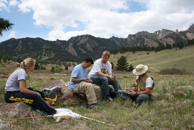

Grasshopper Resurvey 2006-2015
César Nufio led a resurvey project utilizing the curated and databased Alexander Orthoptera Collection to measure the effects of climate change on regional insects. The Alexander collection is composed of over 24,000 pinned and labeled grasshoppers collected during the 1930's to the 1960's from the Rocky Mountain and plains regions of Colorado. Approximately 14,000 of these grasshoppers that make up the Alexander Collection are voucher specimens from a three year (1958 - 1960) survey project.
Because of the quality of Alexander’s specimen data, field survey notebooks and associated weather station data, the 2006-2015 resurvey project focused on determining the effects of a changing climate on the 1) phenology (timing of life history events), 2) altitudinal ranges and 3) morphological characteristics of regional grasshoppers, a well studied and economically important group of organisms. A unique contribution of this project is its ability to utilize data from specimens collected 50 years ago, coupled with specimens from our resurvey to determine which life history characteristics may make certain grasshopper (or other insect) species more likely to respond to climate change. The initial five year resurvey project was supported by an ecology grant from the National Science Foundation grant (#0718112).

Project Biography
- Nufio, C.R., McGuire, C.R., Bowers, M.D. and Guralnick, R.P., 2010. Grasshopper community response to climatic change: variation along an elevational gradient. PLoS One, 5(9), p.e12977.
- McGuire, C.R., Nufio, C.R., Bowers, M.D. and Guralnick, R.P., 2012. Elevation-dependent temperature trends in the Rocky Mountain Front Range: changes over a 56- and 20-year record.
- Nufio, C.R. and Buckley, L.B., 2019. Grasshopper phenological responses to climate gradients, variability, and change. Ecosphere, 10(9), p.e02866.
- Nufio, C.R., Sheffer, M.M., Smith, J.M., Troutman, M.T., Bawa, S.J., Taylor, E.D., Schoville, S.D., Williams, C.M. and Buckley, L.B., 2025. Insect size responses to climate change vary across elevations according to seasonal timing. PLoS Biology, 23(1), p.e3002805.

 ©2026 CU Museum, UCB 218, University of Colorado, Boulder, Colorado 80309
©2026 CU Museum, UCB 218, University of Colorado, Boulder, Colorado 80309